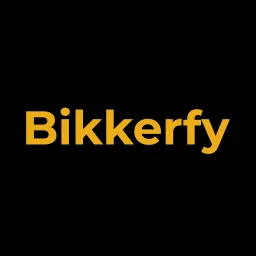

Conte o que está acontecendo
Descreva a necessidade e envie até 5 fotos para dar contexto ao chamado.
Serviços locais, sem complicação
O Bikko aproxima quem precisa resolver algo em casa de prestadores autônomos da região. Você mostra o que precisa, recebe propostas e decide com calma.
Para quem precisa de ajuda. Para quem vive do próprio trabalho.
Do chamado ao aceite
O produto deixa o essencial visível: o que precisa ser feito, o que foi proposto e o que cada pessoa respondeu.
Descreva a necessidade e envie até 5 fotos para dar contexto ao chamado.
O prestador analisa a solicitação e envia uma proposta com validade de até 48 horas.
Depois da proposta inicial, o histórico registra até 5 rodadas de contrapropostas.
Dois lados da mesma conversa
Crie uma solicitação, anexe fotos e acompanhe as respostas em um só lugar.
Quero usar o Bikkofy
Para prestadoresMonte seu portfólio, veja chamados compatíveis e responda no seu ritmo.
Quero trabalhar com o BikkerfyMais contexto, menos desencontro
Fotos ajudam a explicar a necessidade antes da visita. Caso o prestador precise entender melhor a situação, ele pode pedir mais detalhes pelo próprio chamado.
O essencial fica claro
Cada proposta fica disponível por até 48 horas para evitar conversas sem fim.
As partes podem ajustar a proposta em rodadas registradas antes de aceitar a vigente.
Cliente e prestador avaliam a experiência somente depois que o atendimento termina.
Dúvidas frequentes
No Bikkofy, o cliente descreve a necessidade e envia fotos. No Bikkerfy, o prestador mantém o portfólio, recebe solicitações compatíveis com sua região e responde às propostas.
A solicitação pode começar com até 5 fotos. Se o prestador pedir mais detalhes, o cliente pode enviar até 5 fotos complementares.
Bikko para a vida real
Os aplicativos oficiais estarão disponíveis em breve na Google Play.